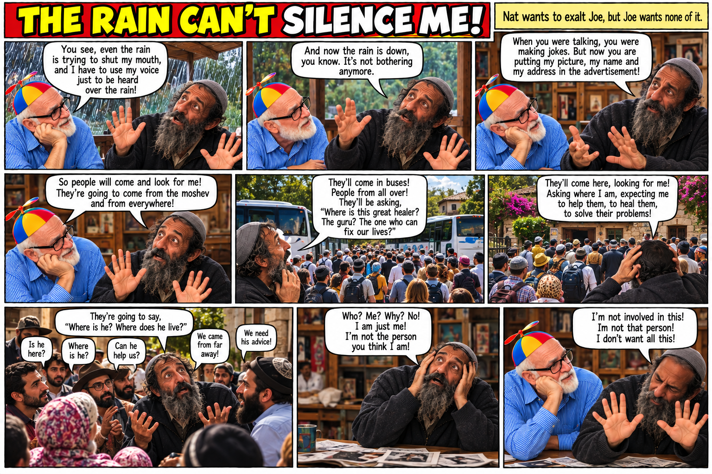
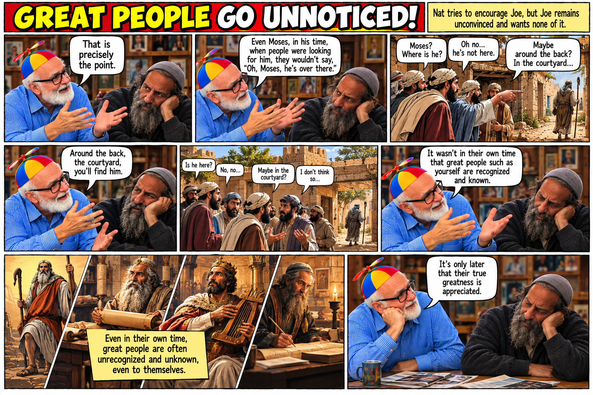
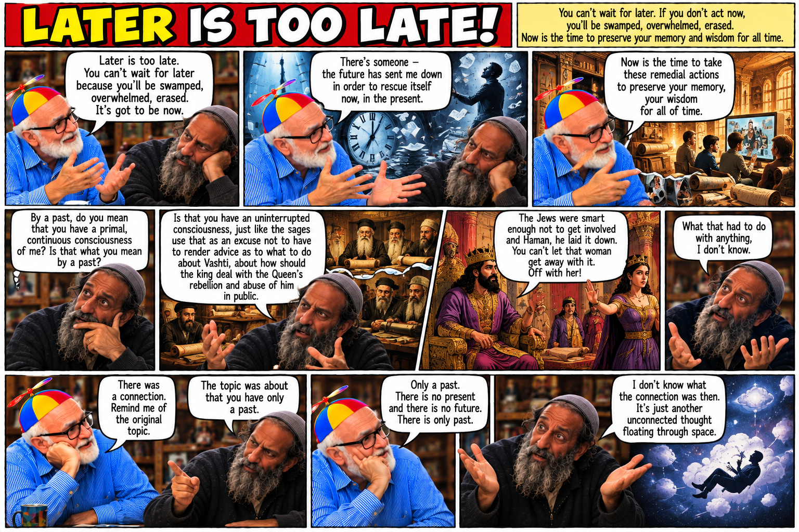

Joe and Nat
Four satirical conversations about publicity, humility, recognition, memory, and acting before later becomes too late.




Four satirical conversations about publicity, humility, recognition, memory, and acting before later becomes too late.


